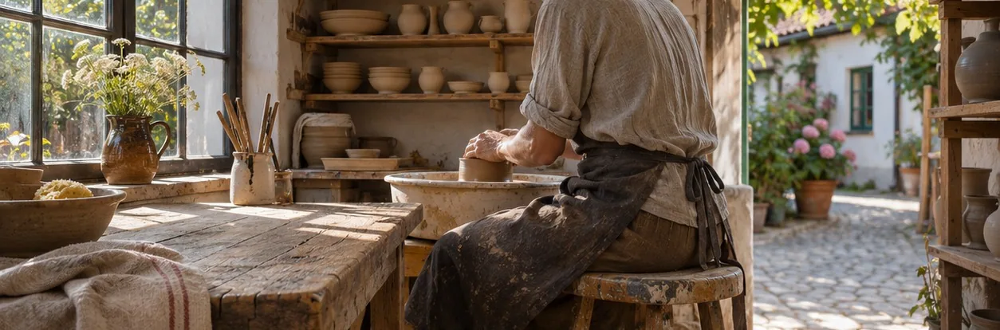

Kezdőoldal-koncepciók
Válassz egy kezdőoldalt az előnézethez. Mindhárom változat alján visszatérhetsz ide.
-

1. A korong mellett
Dóra meghívása és a tálat formáló kezek közelről. A három tanfolyam egymás mellett hasonlítható össze.
-

2. Műhelynapló
Széles műhelyfotóval nyitunk. Dóra rövid bejegyzésekben meséli el, mi készül a szombati és az esti alkalmakon.
-

3. A műhely órarendje
Rövid meghívás után órarendben olvasható a három program. Egymás alá kerülnek a napok, az óraszámok és a díjak.